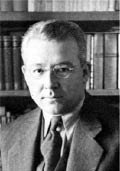

(1907 – 1948)

Şair ve yazar Sabahattin Ali, kendi zamanında baskıyla ve zulümle yaşamış olsa da ölümünden yıllar sonra bir sanatçı olarak hak ettiği üne kavuştu. Bugün radyolarda, televizyonlarda çalan en sevilen şarkıların sözlerini bu büyük şairimizin yazdığını kaçımız biliyoruz?
Türk romanının ve şiirinin ölümsüz adlarından Sabahattin Ali, 25 Şubat 1907'de Gümülcine'de doğdu. Babası Cihangirli Selahattin Ali Bey piyade yüzbaşısıydı, bu yüzden görev yeri sık sık değişiyordu. Ali çocukluk yıllarında çeşitli şehirlerde yaşadı, çeşitli okullarda okudu. Ortaokulu önce Balıkesir Öğretmen Okulu'nda sonra İstanbul İlköğretmen Okulu'nda okudu ve 1926'da bu okuldan mezun oldu. İlk yazıları 1925'te Balıkesir'de yayınlanan Irmak adlı dergide çıktı. Ali bir süre ilkokul öğretmenliği yaptıktan sonra 1928'de Milli Eğitim Bakanlığı tarafından Almanya'ya gönderildi. Potsdam ve Berlin'de öğrenim gördü. 1930'da Türkiye'ye geri döndü ve Ankara, Aydın ve Konya'daki ortaokullarda Almanca öğretmenliği yaptı. İlk öyküsü Bir Orman Hikayesi, 30 Eylül 1930'da Resimli Ay dergisinde yayımlandı.
1932 yılında, bir arkadaş ortamında okuduğu bir şiirde Atatürk'e hakaret ettiği iddiasıyla tutuklandı. 1933'te çıkan afla bir yıl yattığı cezaevinden çıktı. O dönemde bakan olan Hikmet Bayur yazardan fikrinin değiştiğini ispatlamasını isteyince Sabahattin Ali 15 Ocak 1934'te Varlık Dergisi'nde Benim Aşkım adlı şiirini yayımlayarak Atatürk'e olan bağlılığını göstermeye çalıştı. Yine 1934'te, Milli Eğitim Bakanlığı Yayın Müdürlüğü'nde işe girdi. 16 Mayıs 1935'te Aliye Hanım'la evlendi. 1936'da askere gitti. Eylül 1937'de kızı Filiz Ali dünyaya geldi. 1938'de Musiki Muallim Mektebi'nde Türkçe öğretmenliğine başladı, ancak bu göreve 1940 yılında tekrar askere alınıncaya kadar devam edebildi. 1941 yılında askerden dönünce Ankara Devlet Konservatuarı'nda Almanca öğretmenliği yapmaya başladı.
Yazar 1937'de Kuyucaklı Yusuf, 1940'ta İçimizdeki Şeytan ve 1943'te Kürk Mantolu Madonna olmak üzere üç roman yazdı. "İçimizdeki Şeytan", Ali'nin Nihal Atsız ve milliyetçi kesimle büyük bir çatışmaya girmesine yol açtı. Nihal Atsız'a açtığı davayı kazandığı hâlde tepkiler hiç dinmedi ve 1945 yılında Ankara Devlet Konservatuarı'ndaki görevinden alındı. Bu sırada yazı yazdığı gazeteler, dönemin siyasi olayları sonucunda kapandı.
Tüm bu olaylar üstüne İstanbul'da gazetecilik yapmaya karar veren Sabahattin Ali, Aziz Nesin ve Rıfat Ilgaz'la birlikte 1945 yılında Marko Paşa adlı bir mizah dergisi çıkarmaya başladı. Bu dergi kapatılınca Malum Paşa, Öküz Paşa ve Merhum Paşa adlı siyasi mizah dergilerini de 1946 ve 1947 yıllarında çıkardılar. 1948'de Sabahattin Ali bu dergilerdeki yazılarından biri yüzünden tutuklandı ve üç ay hapis yattı.
Sabahattin Ali 1934'te halk şiirinden esinlenerek yazdığı şiirlerini Dağlar ve Rüzgar adlı kitabında topladı, bu kitap 1943'te derlenerek tekrar piyasaya sürüldü.
Sabahattin Ali yaşadığı onca zorluktan ve sürekli olarak izlenmesinden dolayı yurtdışına kaçmak istedi, ancak kendisine yardım etmesi için anlaştığı Milli Emniyet'le bağlantılı bir kaçakçı olan Ali Ertekin tarafından 2 Nisan 1948'de Bulgaristan sınırında öldürüldü. Bu olayın üzerindeki sır perdesi hâlâ tam olarak aydınlanmamıştır ve verdiği çelişkili açıklamalar nedeniyle suçu üstlenen kişinin gerçek fail olmadığı yönünde kuvvetli şüpheler bulunmaktadır.
Sabahattin Ali, romanlarında insan ruhunu çok iyi bir şekilde irdeledi. Gerçekçi ve yepyeni öykü anlayışıyla tarifi zor hisleri başarıyla dile getirdi. İnsanın zayıflıklarını yansıtmaktan çekinmedi ve yanıtlanması zor sorular sordu. Tutkuyu anlatışındaki ustalıkla Sabahattin Ali döneminin yazarları arasında çok önemli bir yere sahiptir. Talihsizliklerle dolu yaşamı, ölümü, insan ruhunun derinliklerine inen incelemeleri ile günümüzde hâlâ araştırılan, incelenen bir yazardır. "Leylim Ley", "Aldırma Gönül" ve "Benim Meskenim Dağlardır Dağlar" gibi şarkılar başta olmak üzere, Sabahattin Ali'nin birçok şiiri sonraki yıllarda bestelenmiştir ve bugün hâlâ söylenmektedir.
Romanları: Kuyucaklı Yusuf (1937), İçimizdeki Şeytan (1940), Kürk Mantolu Madonna (1942)